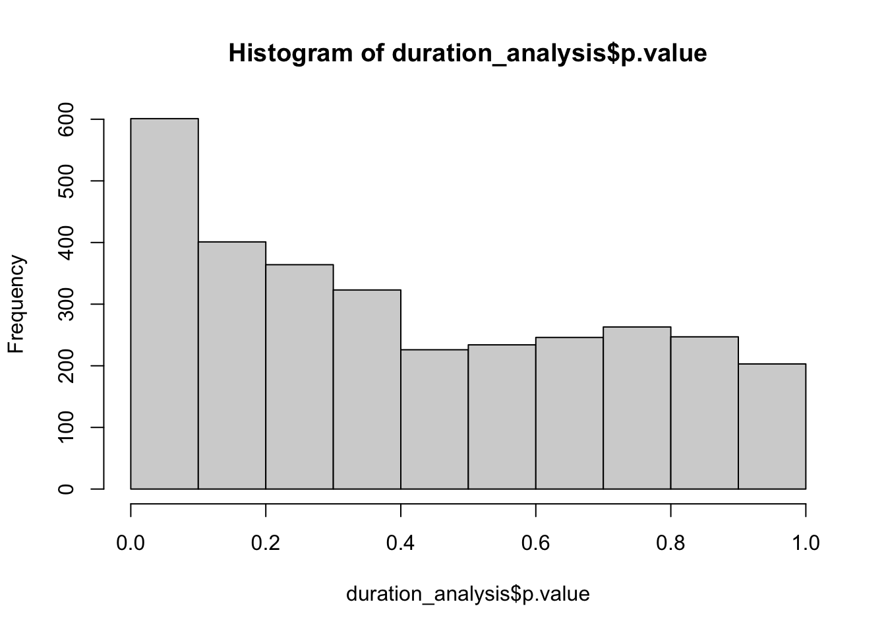
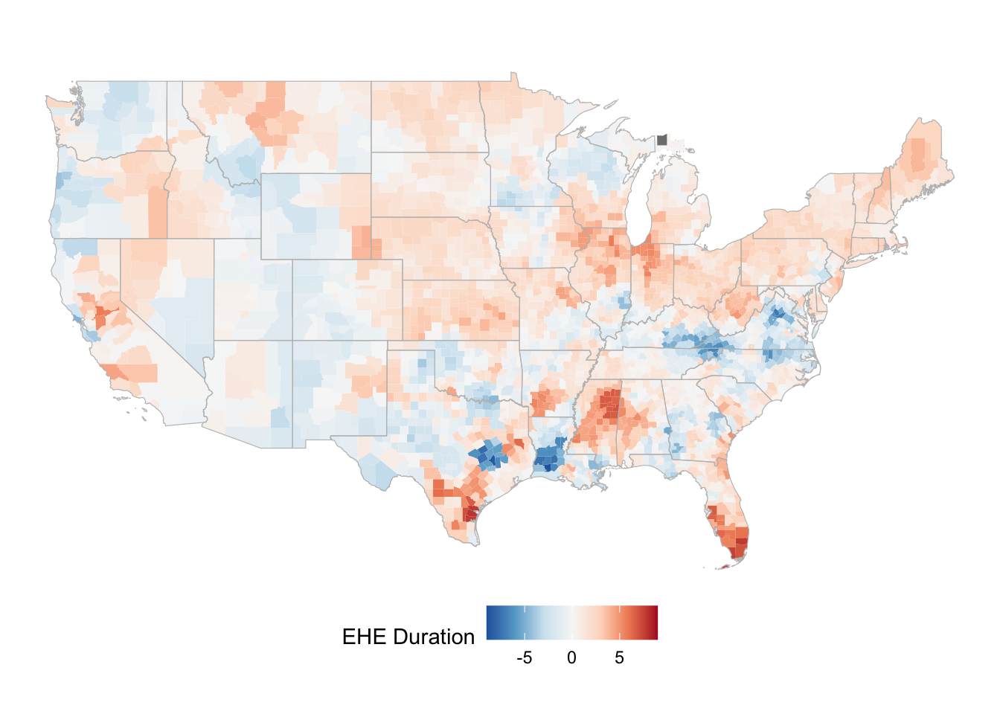
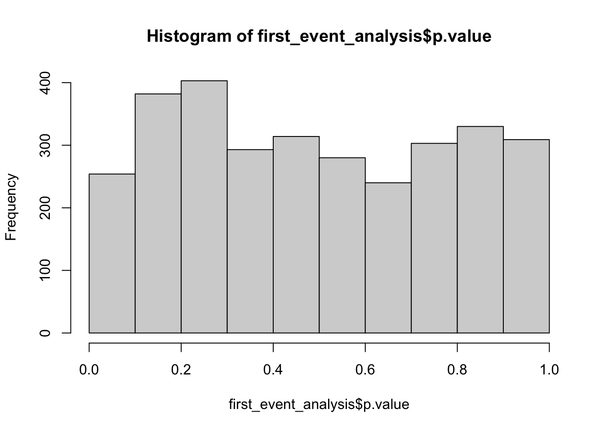
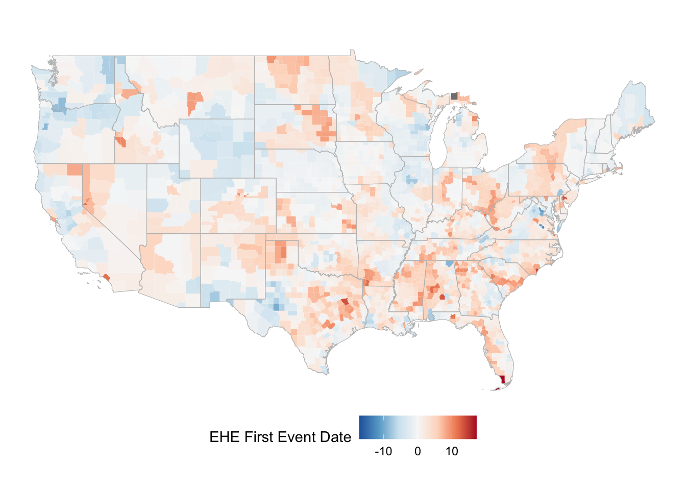
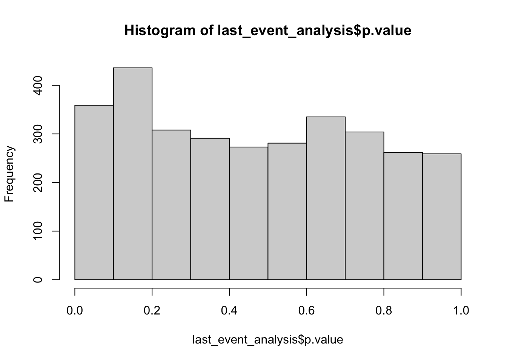
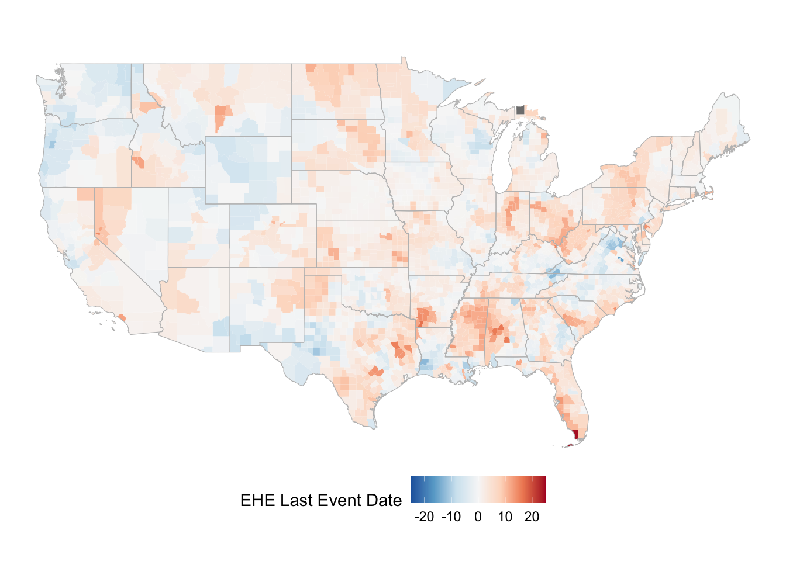

source_dir <- "./data/"
states_file_path <- file.path(source_dir,
"us49_states_geo_tigris.rds")
states_geo <- readRDS(states_file_path)[[1]]
counties_file_path <- file.path(source_dir,
"us49_counties_geo_tigris.rds")
counties_geo <- readRDS(counties_file_path)[[1]]Season Analysis for Extreme Heat Events
Loading the base spatail data set including Counties and States boundaires
Loading the aggregate extreme events data set
dat_path <- file.path(source_dir,
"Counties_compiled_admin_geo_ehe_ece_sf_2008_2022.rds")
file_size <- file.info(dat_path)$size
dat <- readRDS(dat_path)[[1]]Create seasonal summary by county
options(scipen=999)
dat_table = dat %>% st_drop_geometry()
dat_ehe_season = dat_table %>% filter(event_type == 'Extreme Heat Event') %>%
select(GEOID, NAME, STUSPS, STATE_NAME, event_date, event_type, avg_intensity, year_numerical,
month_numerical, day_numerical)
dat_ehe_season$event_date = as.Date(dat_ehe_season$event_date)
## Adding years with no event to the dataset
lookup_table <- dat_table %>%
select(GEOID, NAME, STUSPS, STATE_NAME) %>%
distinct() %>%
filter(!is.na(NAME) & !is.na(STUSPS) & !is.na(STATE_NAME))
fill_na_with_lookup <- function(dat_table, lookup_table, column) {
na_rows <- is.na(dat_table[[column]])
lookup_values <- lookup_table[match(dat_table$GEOID[na_rows], lookup_table$GEOID), column]
dat_table[[column]][na_rows] <- lookup_values
return(dat_table)
}
year_range <- data.frame(year_numerical = 2008:2022)
unique_geoids <- unique(dat$GEOID)
year_geoid_combinations <- expand.grid(year_numerical = year_range$year_numerical, GEOID = unique_geoids)
season_table <- dat_ehe_season %>%
group_by(GEOID, NAME, STATE_NAME, year_numerical) %>%
summarise(
mean_intensity = mean(avg_intensity),
first_event = min(day_numerical),
last_event = max(day_numerical),
duration = as.numeric(difftime(max(event_date), min(event_date), units = "days")) + 1
)`summarise()` has grouped output by 'GEOID', 'NAME', 'STATE_NAME'. You can
override using the `.groups` argument.season_table <- merge(year_geoid_combinations,
season_table,
by = c("year_numerical", "GEOID"), all = TRUE)
season_table["mean_intensity"] <- lapply(season_table["mean_intensity"], function(x) ifelse(is.na(x), 0, x))
season_table["first_event"] <- lapply(season_table["first_event"], function(x) ifelse(is.na(x), 0, x))
season_table["last_event"] <- lapply(season_table["last_event"], function(x) ifelse(is.na(x), 0, x))
season_table["duration"] <- lapply(season_table["duration"], function(x) ifelse(is.na(x), 0, x))
season_table <- fill_na_with_lookup(season_table,
lookup_table, "NAME")
season_table <- fill_na_with_lookup(season_table,
lookup_table, "STATE_NAME")Duration Analysis
options(scipen=999)
duration_analysis <- season_table %>%
group_by(GEOID, NAME) %>%
do(tidy(lm(duration ~ year_numerical, data = .)))
duration_analysis = duration_analysis %>% filter(term != '(Intercept)')hist(duration_analysis$p.value)
Map
# Merge with geometry data
county_boundaris_catalog_all <- merge(counties_geo,
duration_analysis %>% st_drop_geometry(),
by.x="GEOID",
by.y="GEOID",
all.x = TRUE,
all.y = TRUE,
suffix = c("","_sp")) %>% st_as_sf()
# area all map
ggplot() +
geom_sf(data = county_boundaris_catalog_all,
aes(fill = estimate), color = NA,
lwd = .1) +
scale_fill_distiller(palette = "RdBu",
limits = c(-9, 9)
) +
geom_sf(data = states_geo, fill = NA, color = "grey", size = 0.01, alpha = 0.2) +
labs(fill = "EHE Duration") +
theme_void() +
theme(legend.position = "bottom")
First Event Analysis
options(scipen=999)
first_event_analysis <- season_table %>%
group_by(GEOID, NAME) %>%
do(tidy(lm(first_event ~ year_numerical, data = .)))
first_event_analysis = first_event_analysis %>% filter(term != '(Intercept)')hist(first_event_analysis$p.value)
Map
# Merge with geometry data
county_boundaris_catalog_all <- merge(counties_geo,
first_event_analysis %>% st_drop_geometry(),
by.x="GEOID",
by.y="GEOID",
all.x = TRUE,
all.y = TRUE,
suffix = c("","_sp")) %>% st_as_sf()
# area all map
ggplot() +
geom_sf(data = county_boundaris_catalog_all,
aes(fill = estimate), color = NA,
lwd = .1) +
scale_fill_distiller(palette = "RdBu",
limits = c(-17.2, 17.2)
) +
geom_sf(data = states_geo, fill = NA, color = "grey", size = 0.01, alpha = 0.2) +
labs(fill = "EHE First Event Date") +
theme_void() +
theme(legend.position = "bottom")
Last Event Date Analysis
options(scipen=999)
last_event_analysis <- season_table %>%
group_by(GEOID, NAME) %>%
do(tidy(lm(last_event ~ year_numerical, data = .)))
last_event_analysis = last_event_analysis %>% filter(term != '(Intercept)')hist(last_event_analysis$p.value)
Map
# Merge with geometry data
county_boundaris_catalog_all <- merge(counties_geo,
last_event_analysis %>% st_drop_geometry(),
by.x="GEOID",
by.y="GEOID",
all.x = TRUE,
all.y = TRUE,
suffix = c("","_sp")) %>% st_as_sf()
# area all map
ggplot() +
geom_sf(data = county_boundaris_catalog_all,
aes(fill = estimate), color = NA,
lwd = .1) +
scale_fill_distiller(palette = "RdBu",
limits = c(-25, 25)
) +
geom_sf(data = states_geo, fill = NA, color = "grey", size = 0.01, alpha = 0.2) +
labs(fill = "EHE Last Event Date") +
theme_void() +
theme(legend.position = "bottom")
#ggplot(result, aes(x = year_numerical, y = total_days, group = GEOID, color = GEOID)) +
# geom_line() +
# geom_point() +
# theme_minimal() +
# labs(title = "Total Days Trend by County",
# x = "Year",
# y = "Total Days",
# color = "County (GEOID)")